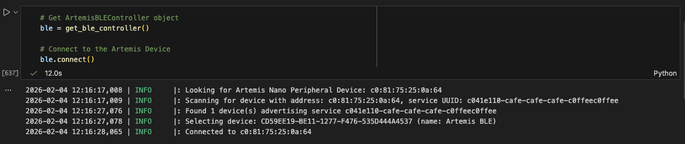
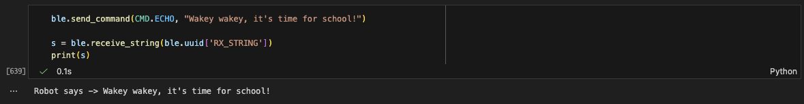
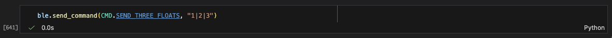
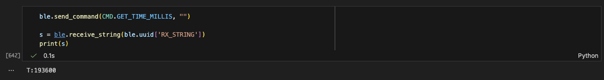
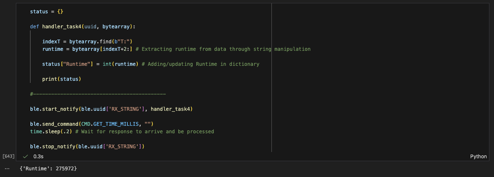

Lab 1A: Artemis Board Setup
Objective
The purpose of Lab 1A is to setup and become familiar with the Arduino IDE and the Artemis board. After this lab, we should be comfortable programming the board, using the board LED, reading/writing serial messages over USB, and using the onboard temperature sensor and Pulse Density Microphone.
Prelab
Arduino IDE Installation
I installed the latest version of Arduino IDE and added the SparkFun Apollo3 boards manager using the JSON link from the official repository.
Board Information
The SparkFun RedBoard Artemis Nano is a development board featuring:
- Apollo3 Blue microcontroller
- Bluetooth Low Energy (BLE) connectivity
- Onboard temperature sensor
- Pulse Density Microphone (PDM)
- Low power consumption
Setup
Connected the Artemis board to my computer and selected the correct board and port in Arduino IDE:
- Board: SparkFun RedBoard Artemis Nano
- Port: /dev/cu.usberial-10
Task 1: Blink Test
Ran the Blink example from File → Examples → 01.Basics → Blink to test the onboard LED.
Code
I modified the delay to confirm the code was actually running and not some default OS LED blinking:
void setup() {
pinMode(LED_BUILTIN, OUTPUT);
}
void loop() {
digitalWrite(LED_BUILTIN, HIGH);
delay(200); // Reduced delay for faster blinking
digitalWrite(LED_BUILTIN, LOW);
delay(200);
}Demo
Task 2: Serial Monitor Test
Tested serial communication using File → Examples → Apollo3 → Example04_Serial.
Demo
Testing the serial monitor to test bidirectional communication at 115200 baud:
Task 3: Temperature Sensor Test
Tested the onboard temperature sensor using File → Examples → Apollo3 → Example02_analogRead.
Demo
Heating up the board by blowing air onto it:
Task 4: Microphone Test
Tested the Pulse Density Microphone (PDM) using File → Examples → PDM → Example1_MicrophoneOutput.
Demo
Playing a 12000Hz audio recording to test if the microphone can detect high frequencies:
Lab 1B: Bluetooth Communication
Objective
The purpose of Lab 1B is to establish communication between your computer and the Artemis board through the Bluetooth stack. The computer will send Python commands from a Jupyter notebook to an Artemis board running the Arduino programming language. We will also establish a framework for sending data from the Artemis to the computer via Bluetooth that will be useful in future labs.
Prelab
Overview
Lab 1B involves setting up Bluetooth Low Energy (BLE) communication between a Python/Jupyter environment on my computer and the Artemis board.
Configurations
Python: connections.yaml
# connections.yaml
artemis_address: 'c0:81:a4:24:29:64'
ble_service: 'c041e110-cafe-cafe-cafe-c0ffeec0ffee'
characteristics:
TX_CMD_STRING: '9750f60b-9c9c-4158-b620-02ec9521cd99'
RX_FLOAT: '27616294-3063-4ecc-b60b-3470ddef2938'
RX_STRING: 'f235a225-6735-4d73-94cb-ee5dfce9ba83'Arduino IDE: ble_arduino.ino
// BLE Service UUID - must match connections.yaml
#define BLE_UUID_TEST_SERVICE "c041e110-cafe-cafe-cafe-c0ffeec0ffee"
// Characteristic UUIDs
#define BLE_UUID_RX_STRING "f235a225-6735-4d73-94cb-ee5dfce9ba83"
#define BLE_UUID_TX_CMD_STRING "9750f60b-9c9c-4158-b620-02ec9521cd99"
#define BLE_UUID_RX_FLOAT "27616294-3063-4ecc-b60b-3470ddef2938"Successful Connection
Computer side - Python successfully connects to Artemis:
Artemis side - Serial monitor shows connection established:
12:16:15.840 -> Advertising BLE with MAC: c0:81:75:25:a:64
12:16:27.334 -> Connected to: 6c:7e:67:bd:52:58Codebase: BLE Architecture
UUID Selection
The BLE service UUID is the ID that the Artemis board advertises. As long as it follows the UUID format
(8-4-4-4-12 hex digits) and is unique, it can be anything. I tested this by creating a custom UUID
(c041e110-cafe-cafe-cafe-c0ffeec0ffee) and confirmed it worked after updating both the
Arduino sketch and Python config with matching UUIDs.
Communication Flow
The Artemis (peripheral) advertises a BLE service with multiple characteristics. The laptop (central) connects by searching for the UUID, writes commands to a string characteristic, and subscribes to notify-enabled characteristics for replies. Commands are encoded as strings with a numeric type and optional values. The Artemis tokenizes these, processes them, and sends back strings or floats asynchronously via notify.
Tasks
In order to test the robot's sensors more effectively, it is critical to have a working wireless debugging system. The following tasks ensure that we can receive timestamped messages from the Artemis board.
Task 1: ECHO Command
Send a string value from the computer to the Artemis board using the ECHO command. The computer should then receive and print an augmented string.
Python Code and Output
Arduino Serial Output
12:16:15.840 -> Advertising BLE with MAC: c0:81:75:25:a:64
12:16:27.334 -> Connected to: 6c:7e:67:bd:52:58
12:24:04.114 -> Sent back: Robot says -> Wakey wakey, it's time for school!Task 2: SEND_THREE_FLOATS
Send three floats to the Artemis board using the SEND_THREE_FLOATS command and extract the three float values in the Arduino sketch.
Python Code
Arduino Serial Output
12:40:16.041 -> Three Floats: 1.00, 2.00, 3.00Task 3: GET_TIME_MILLIS
Add a command GET_TIME_MILLIS which makes the robot reply with a string such as "T:123456" to the string characteristic.
Python Code and Output
Arduino Serial Output
12:41:10.062 -> Sent back: T:193600Task 4: Notification Handler
Setup a notification handler in Python to receive the string value (the BLEStringCharacteristic in Arduino) from the Artemis board. In the callback function, extract the time from the string.
Python Code and Output
Arduino Serial Output
12:42:32.490 -> Sent back: T:275972Task 5: Data Transfer Rate
Write a loop that gets the current time in milliseconds and sends it to your laptop to be received and processed by the notification handler. Collect these values for a few seconds and use the time stamps to determine how fast messages can be sent.
Question: What is the effective data transfer rate of this method?
Task 6: Array Storage
Create an array that can store time stamps. This array should be defined globally so that other functions can access it if need be. In the loop, rather than send each time stamp, place each time stamp into the array. Add a command SEND_TIME_DATA which loops the array and sends each data point as a string to your laptop to be processed.
Task 7: Temperature Array
Add a second array that is the same size as the time stamp array. Use this array to store temperature readings. Each element in both arrays should correspond (i.e., the first time stamp was recorded at the same time as the first temperature reading). Add a command GET_TEMP_READINGS that loops through both arrays concurrently and sends each temperature reading with a time stamp.
Task 8: Discussion
Discuss the differences between these two methods (streaming vs. batching), the advantages and disadvantages of both and the potential scenarios that you might choose one method over the other.
Questions:
- How "quickly" can the second method record data?
- The Artemis board has 384 kB of RAM. Approximately how much data can you store to send without running out of memory?